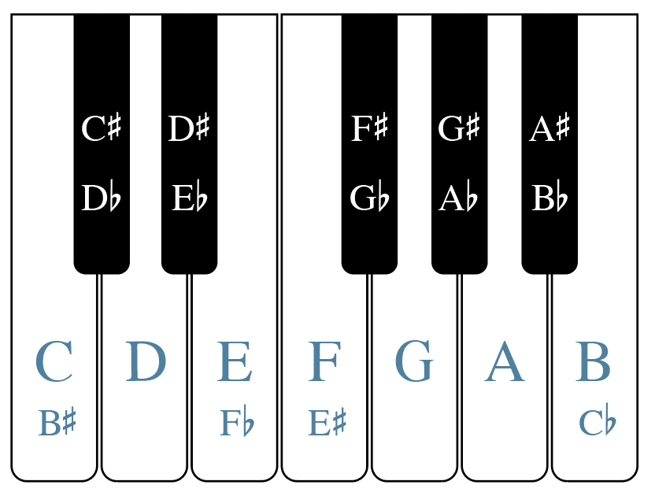

半音、全音与变音记号¶
要点
- 钢琴键盘上某个键上方的半音，就是它紧右边的那个键；某个键下方的半音，就是它紧左边的那个键。
- 全音等于两个半音。某音上方的全音，是从它往右数的第二个键；下方的全音，是从它往左数的第二个键。
- 变音记号（accidental）改变一个音的音高。升号把音升高半音，降号把音降低半音，还原号则取消此前的变音记号。
- 重升号把一个音升高全音，重降号把一个音降低全音。
- 一定要把变音记号写在音的左侧，并且正对着该音所在的那条线或那个间。
- 当两个音拼写不同而音响相同，它们互为等音（enharmonic equivalence）。
在上一章键盘与大谱表中，我们讨论了钢琴键盘上白键的字母名称，并提到黑键总是按两个一组或三个一组交替排列。不过，在讨论黑键的名称之前，我们必须先认识半音与全音。
半音与全音¶
在西方记谱法中，半音（half step）被视为最小的音程，也就是两个音之间最小的距离。谱例 1 是一个钢琴键盘，上面标出了白键音高的字母名称，还标出了若干半音。在钢琴键盘上（见谱例 1），对大多数白键音来说，它上方的半音是右上方那个黑键，下方的半音是左上方那个黑键。例如，G 右上方的黑键“夹在”G 与 A 之间；可以说，这个黑键比 G 高半音，比 A 低半音。有两对白键——E/F 与 B/C——之间没有黑键（见谱例 1）。这是因为 E–F 与 B–C 本身就是半音。黑键分成两个一组或三个一组，可以让键盘手更快地看清并摸到它们。
 谱例 1. 一个钢琴键盘，白键上标有字母名称；并标出了若干半音。
谱例 1. 一个钢琴键盘，白键上标有字母名称；并标出了若干半音。
全音（whole step）相当于两个半音。谱例 2 是一个钢琴键盘，标出了白键音高的字母名称，并用方括号标出了若干全音。中间隔着一个黑键的两对白键（A 与 B、C 与 D、D 与 E、F 与 G、G 与 A）相距一个全音。要找到 E 或 B 上方的全音，只需往右数两个键：E 上方的全音是 F 右边的黑键，B 上方的全音是 C 右边的黑键。同理，要找到 C 或 F 下方的全音，就往左数两个键，即分别是 B 与 E 左边的黑键。要从黑键找全音，也要往右或往左数两个键。例如，C 右边那个黑键上方的全音，是 D 右边的黑键；B 左边那个黑键下方的全音，是 A 左边的黑键。
 谱例 2. 一个钢琴键盘，白键上标有字母名称；并标出了若干全音。
谱例 2. 一个钢琴键盘，白键上标有字母名称；并标出了若干全音。
半音和全音听起来是什么样子？谱例 3 中的短视频作了演示：
▶️ 视频：半音与全音的声音
谱例 3. Chelsey Hamm 博士（Christopher Newport University）演示半音与全音的声音。
升号、降号与还原号¶
变音记号（accidental）改变一个音的音高。升号（♯）看起来像一个倾斜的井号，把音升高半音。降号（♭）看起来像倾斜的小写字母“b”，把音降低半音。还原号（♮）看起来像一个倾斜的方框，左上方和右下方各伸出一截线头，用来取消此前的变音记号（如升号或降号）。升号、降号和还原号是最常用的三种变音记号。
重升号（double sharp，通常写作 𝄪，有时也写作 ♯♯）把一个音升高两个半音（即一个全音）。重降号（double flat，𝄫）把一个音降低两个半音（即一个全音）。无论符干朝哪个方向，变音记号总是写在音的左侧。变音记号应当正对着该音所在的那条线或那个间写。
谱例 4 展示了升号、降号和还原号的正确与错误写法：
 谱例 4. 变音记号的正确与错误写法。
谱例 4. 变音记号的正确与错误写法。
当两个音写在同一线或同一间上、但带有不同的变音记号时，这两个记号分别作用于第一个音和第二个音。谱例 5 展示了这种情况：
 谱例 5. 并排的降 B 与还原 B。
谱例 5. 并排的降 B 与还原 B。
你可以在下面这个较容易的练习中，通过拖放来练习在高音谱号和低音谱号上辨认半音与全音：
练习
🧩 互动练习（H5P）：Half Steps and Whole Steps - Easy Treble and Bass Clefs Only，见在线版。
你可以在下面这个较难的练习中，通过拖放来练习在所有谱号上辨认半音与全音：
练习
🧩 互动练习（H5P）：Half Steps and Whole Steps - All Clefs More Difficult，见在线版。
钢琴键盘上的黑键¶
谱例 6 是一个钢琴键盘，上面标出了黑键的字母名称。比白键高半音的黑键，是在白键的名称上加“升”字。例如，C 右边的黑键叫作“升 C”（C♯）。比白键低半音的黑键，是在白键的名称上加“降”字。例如，D 左边的黑键叫作“降 D”（D♭）。

谱例 6. 一个钢琴键盘，标出了黑键的字母名称。F 也可以叫作 E♯，E 也可以叫作 F♭。C 也可以叫作 B♯，B 也可以叫作 C♭。谱例 7 还展示了重升号和重降号这两个变音记号。重升号比某音高两个半音。例如，D𝄪也就是 E；E𝄪也就是 F♯（或 G♭）。重降号比某音低两个半音。例如，A𝄫也就是 G；C𝄫也就是 B♭或 A♯。
 谱例 7. 钢琴键盘上的重变音记号。
谱例 7. 钢琴键盘上的重变音记号。
你可以在下面的练习中，通过拖放来练习辨认钢琴上的黑键与白键：
练习
🧩 互动练习（H5P）：Label the Keys Drag and Drop，见在线版。
等音关系¶
你到现在应该已经注意到，钢琴键盘上的每一个键都不止一个名称。当两个音拼写不同而音响相同时，它们互为等音（enharmonic equivalence）。例如，从谱例 6 和谱例 7 可以看出，C♯ 与 D♭ 互为等音。谱例 7 还表明，D 与 C𝄪、E𝄫 互为等音。换句话说，弹 D、C𝄪 或 E𝄫，得到的音高完全相同。
延伸阅读
- Drabkin, William and Mark Lindley. 2001. “Semitone.” Grove Music Online. https://doi.org/10.1093/gmo/9781561592630.article.25395.
- Gerou, Tom and Linda Lusk. 1996. Essential Dictionary of Music Notation. Los Angeles: Alfred.
- Gould, Elaine. 2011, Behind Bars: the Definitive Guide to Music Notation. London: Bloomsbury.
- Hiley, David. 2001. “Accidental.” Grove Music Online. https://doi.org/10.1093/gmo/9781561592630.article.00103.
- Hoover, Cynthia Adams and Edwin M. Good. 2013. “Piano.” Grove Music Online. https://doi.org/10.1093/gmo/9781561592630.article.A2257895.
- McGrain, Mark. 1986. Music Notation. Boston: Berklee Press.
- Roemer, Clinton. 1985. The Art of Music Copying: the Preparation of Music for Performance, 2nd edition. Sherman Oaks: Roerick Music Company.
- Rushton, Julian. 2001. “Enharmonic.” Grove Music Online. https://doi.org/10.1093/gmo/9781561592630.article.08837.
在线资源
- 半音、全音与变音记号教程（musictheory.net）
- 练习半音、全音与变音记号的游戏（drawmusic.com）
- 变音记号教程（mymusictheory.com）
- 钢琴黑键教程（musicradar.com）
- 钢琴键盘指认练习（musictheory.net）
- 钢琴键名标注游戏（quizlet.com）
- 等音关系教程（The Music Notation Project）
- 供学生或教师使用的空白键盘图
网络上的作业
- 钢琴键盘与五线谱上的半音与全音（.pdf）
- 五线谱上的半音与全音（.pdf）
- 带变音记号的音的书写与辨认，第 1 页（.pdf），第 9–11 页（.pdf）
- 键盘与五线谱对应（.pdf）
- 等音关系，第 3 页（.pdf），（.pdf）
资源
- 供学生或教师使用的空白键盘图（.pdf）
作业
- 钢琴上的黑键（.pdf，.docx）。要求学生指出记谱的音高应弹在哪个琴键上。
- 钢琴上的半音与全音（.pdf，.docx）。要求学生指出记谱的音高应弹在哪个琴键上，并指出钢琴上哪两个相邻的键构成半音或全音。
- 书写变音记号（.pdf，.docx）。要求学生在谱表上画出带变音记号的音符。
- 书写与辨认变音记号（.pdf，.docx）。要求学生在五线谱上辨认并写出带变音记号符号的音高。
-
五线谱上的半音与全音。要求学生在给定音的上方/下方写出全音与半音，在记谱中辨认全音/半音，并分析一段旋律，找出并标出全音与半音。
-
等音关系。要求学生写出并辨认等音等价关系的音。
- 所有谱号（.pdf）
-
仅高音/低音谱号（.pdf）。要求学生写出并辨认互为等音的音高。
<!-- lilylet-begin: media/2025/08/WK-enharmonic-equivalence-TB.mscz --> <div class="lilylet-container" data-lilylet data-playable data-source="[composer "Chelsey Hamm and Jeremy Freer"] [staves "{s1-s2}"] \staff "1" \key c \major \numericTimeSignature \time 4/4 \clef "treble" \omit Score.TimeSignature gs'2 s \\ \staff "2" \clef "bass" s2 s | %1 \staff "1" ef2 s \\ \staff "2" s2 s | %2 \staff "1" gf''2 s \\ \staff "2" s2 s | %3 \staff "1" bf'2 s \\ \staff "2" s2 s | %4 \staff "1" as'2 s \\ \staff "2" R1 | %5 \staff "1" fs2 s \\ \staff "2" s2 s | %6 \staff "1" ef'2 s \\ \staff "2" s2 s | %7 \staff "1" cs'2 s \\ \staff "2" s2 s | %8 \staff "1" df'2 s \\ \staff "2" s2 s | %9 \staff "1" ds2 s \\ \staff "2" s2 s | %10 \staff "1" s2 s \\ \staff "2" as,2 s | %11 \staff "1" s2 s \\ \staff "2" fs,2 s | %12 \staff "1" s2 s \\ \staff "2" ef,2 s | %13 \staff "1" s2 s \\ \staff "2" gf2 s | %14 \staff "1" s2 s \\ \staff "2" gs,2 s | %15 \staff "1" s2 s \\ \staff "2" cs,2 s | %16 \staff "1" s2 s \\ \staff "2" bf,2 s | %17 \staff "1" s2 s \\ \staff "2" af2 s | %18 \staff "1" s2 s \\ \staff "2" df,2 s | %19 \staff "1" s2 s \\ \staff "2" fs,,2 s | %20 \staff "1" s1 \\ \staff "2" as2 s | %21 \staff "1" s1 \\ \staff "2" cs2 s | %22 \staff "1" df2 s \\ \staff "2" s1 | %23 \staff "1" gf2 s \\ \staff "2" s1 | %24 \staff "1" s1 \\ \staff "2" ef2 s | %25 \staff "1" s1 \\ \staff "2" bf2 s | %26 \staff "1" af2 s \\ \staff "2" s1 | %27 \staff "1" cs2 s \\ \staff "2" s1 | %28 \staff "1" s1 \\ \staff "2" fs2 s | %29 \staff "1" fs,2 s \\ \staff "2" s1 | %30 \staff "1" g'2 af \\ \staff "2" s1 | %31 \staff "1" ef2 d \\ \staff "2" s1 | %32 \staff "1" d2 b \\ \staff "2" s1 | %33 \staff "1" e'2 f \\ \staff "2" s1 | %34 \staff "1" e'2 ef \\ \staff "2" s1 | %35 \staff "1" \clef "bass" d,2 cs \\ \staff "2" s1 | %36 \staff "1" a,2 b \\ \staff "2" s1 | %37 \staff "1" b,2 c \\ \staff "2" s1 | %38 \staff "1" d,2 cf \\ \staff "2" s1 | %39 \staff "1" gs2 a \\ \staff "2" s1 | %40 \staff "1" \clef "treble" c2 bss \\ \staff "2" s1 | %41 \staff "1" fs2 gf \\ \staff "2" s1 | %42 \staff "1" b2 as \\ \staff "2" s1 | %43 \staff "1" g''2 fss \\ \staff "2" s1 | %44 \staff "1" es2 gf \\ \staff "2" s1 | %45" data-mei="<?xml version="1.0" encoding="UTF-8"?> <mei xmlns="http://www.music-encoding.org/ns/mei" meiversion="5.0"> <meiHead> <fileDesc> <titleStmt> <composer>Chelsey Hamm and Jeremy Freer</composer> </titleStmt> <pubStmt /> </fileDesc> <encodingDesc> <projectDesc> <p>Encoded with Lilylet MEIEncoder</p> </projectDesc> </encodingDesc> </meiHead> <music> <body> <mdiv xml:id="mdiv-f89f0000000001"> <score xml:id="score-f89f0000000002"> <scoreDef xml:id="scoredef-f89f0000000003" key.sig="0" meter.count="4" meter.unit="4" meter.visible="false"> <staffGrp xml:id="staffgrp-f89f0000000006" symbol="brace" bar.thru="true"> <staffDef xml:id="staffdef-f89f0000000004" n="1" lines="5" clef.shape="G" clef.line="2" /> <staffDef xml:id="staffdef-f89f0000000005" n="2" lines="5" clef.shape="F" clef.line="4" /> </staffGrp> </scoreDef> <section xml:id="section-f89f0000000007"> <measure xml:id="measure-f89f0000000008" n="1"> <staff xml:id="staff-f89f0000000009" n="1"> <layer xml:id="layer-f89f0000000010" n="1"> <note xml:id="note-f89f0000000011" pname="g" oct="4" dur="2" accid="s" accid.ges="s" /> <space xml:id="rest-f89f0000000012" dur="2" /> </layer> </staff> <staff xml:id="staff-f89f0000000013" n="2"> <layer xml:id="layer-f89f0000000014" n="1"> <space xml:id="rest-f89f0000000015" dur="2" /> <space xml:id="rest-f89f0000000016" dur="2" /> </layer> </staff> </measure> <measure xml:id="measure-f89f0000000017" n="2"> <staff xml:id="staff-f89f0000000018" n="1"> <layer xml:id="layer-f89f0000000019" n="1"> <note xml:id="note-f89f0000000020" pname="e" oct="4" dur="2" accid="f" accid.ges="f" /> <space xml:id="rest-f89f0000000021" dur="2" /> </layer> </staff> <staff xml:id="staff-f89f0000000022" n="2"> <layer xml:id="layer-f89f0000000023" n="1"> <space xml:id="rest-f89f0000000024" dur="2" /> <space xml:id="rest-f89f0000000025" dur="2" /> </layer> </staff> </measure> <measure xml:id="measure-f89f0000000026" n="3"> <staff xml:id="staff-f89f0000000027" n="1"> <layer xml:id="layer-f89f0000000028" n="1"> <note xml:id="note-f89f0000000029" pname="g" oct="5" dur="2" accid="f" accid.ges="f" /> <space xml:id="rest-f89f0000000030" dur="2" /> </layer> </staff> <staff xml:id="staff-f89f0000000031" n="2"> <layer xml:id="layer-f89f0000000032" n="1"> <space xml:id="rest-f89f0000000033" dur="2" /> <space xml:id="rest-f89f0000000034" dur="2" /> </layer> </staff> </measure> <measure xml:id="measure-f89f0000000035" n="4"> <staff xml:id="staff-f89f0000000036" n="1"> <layer xml:id="layer-f89f0000000037" n="1"> <note xml:id="note-f89f0000000038" pname="b" oct="4" dur="2" accid="f" accid.ges="f" /> <space xml:id="rest-f89f0000000039" dur="2" /> </layer> </staff> <staff xml:id="staff-f89f0000000040" n="2"> <layer xml:id="layer-f89f0000000041" n="1"> <space xml:id="rest-f89f0000000042" dur="2" /> <space xml:id="rest-f89f0000000043" dur="2" /> </layer> </staff> </measure> <measure xml:id="measure-f89f0000000044" n="5"> <staff xml:id="staff-f89f0000000045" n="1"> <layer xml:id="layer-f89f0000000046" n="1"> <note xml:id="note-f89f0000000047" pname="a" oct="4" dur="2" accid="s" accid.ges="s" /> <space xml:id="rest-f89f0000000048" dur="2" /> </layer> </staff> <staff xml:id="staff-f89f0000000049" n="2"> <layer xml:id="layer-f89f0000000050" n="1"> <mRest xml:id="mrest-f89f0000000052" /> </layer> </staff> </measure> <measure xml:id="measure-f89f0000000053" n="6"> <staff xml:id="staff-f89f0000000054" n="1"> <layer xml:id="layer-f89f0000000055" n="1"> <note xml:id="note-f89f0000000056" pname="f" oct="4" dur="2" accid="s" accid.ges="s" /> <space xml:id="rest-f89f0000000057" dur="2" /> </layer> </staff> <staff xml:id="staff-f89f0000000058" n="2"> <layer xml:id="layer-f89f0000000059" n="1"> <space xml:id="rest-f89f0000000060" dur="2" /> <space xml:id="rest-f89f0000000061" dur="2" /> </layer> </staff> </measure> <measure xml:id="measure-f89f0000000062" n="7"> <staff xml:id="staff-f89f0000000063" n="1"> <layer xml:id="layer-f89f0000000064" n="1"> <note xml:id="note-f89f0000000065" pname="e" oct="5" dur="2" accid="f" accid.ges="f" /> <space xml:id="rest-f89f0000000066" dur="2" /> </layer> </staff> <staff xml:id="staff-f89f0000000067" n="2"> <layer xml:id="layer-f89f0000000068" n="1"> <space xml:id="rest-f89f0000000069" dur="2" /> <space xml:id="rest-f89f0000000070" dur="2" /> </layer> </staff> </measure> <measure xml:id="measure-f89f0000000071" n="8"> <staff xml:id="staff-f89f0000000072" n="1"> <layer xml:id="layer-f89f0000000073" n="1"> <note xml:id="note-f89f0000000074" pname="c" oct="5" dur="2" accid="s" accid.ges="s" /> <space xml:id="rest-f89f0000000075" dur="2" /> </layer> </staff> <staff xml:id="staff-f89f0000000076" n="2"> <layer xml:id="layer-f89f0000000077" n="1"> <space xml:id="rest-f89f0000000078" dur="2" /> <space xml:id="rest-f89f0000000079" dur="2" /> </layer> </staff> </measure> <measure xml:id="measure-f89f0000000080" n="9"> <staff xml:id="staff-f89f0000000081" n="1"> <layer xml:id="layer-f89f0000000082" n="1"> <note xml:id="note-f89f0000000083" pname="d" oct="5" dur="2" accid="f" accid.ges="f" /> <space xml:id="rest-f89f0000000084" dur="2" /> </layer> </staff> <staff xml:id="staff-f89f0000000085" n="2"> <layer xml:id="layer-f89f0000000086" n="1"> <space xml:id="rest-f89f0000000087" dur="2" /> <space xml:id="rest-f89f0000000088" dur="2" /> </layer> </staff> </measure> <measure xml:id="measure-f89f0000000089" n="10"> <staff xml:id="staff-f89f0000000090" n="1"> <layer xml:id="layer-f89f0000000091" n="1"> <note xml:id="note-f89f0000000092" pname="d" oct="4" dur="2" accid="s" accid.ges="s" /> <space xml:id="rest-f89f0000000093" dur="2" /> </layer> </staff> <staff xml:id="staff-f89f0000000094" n="2"> <layer xml:id="layer-f89f0000000095" n="1"> <space xml:id="rest-f89f0000000096" dur="2" /> <space xml:id="rest-f89f0000000097" dur="2" /> </layer> </staff> </measure> <measure xml:id="measure-f89f0000000098" n="11"> <staff xml:id="staff-f89f0000000099" n="1"> <layer xml:id="layer-f89f0000000100" n="1"> <space xml:id="rest-f89f0000000101" dur="2" /> <space xml:id="rest-f89f0000000102" dur="2" /> </layer> </staff> <staff xml:id="staff-f89f0000000103" n="2"> <layer xml:id="layer-f89f0000000104" n="1"> <note xml:id="note-f89f0000000105" pname="a" oct="2" dur="2" accid="s" accid.ges="s" /> <space xml:id="rest-f89f0000000106" dur="2" /> </layer> </staff> </measure> <measure xml:id="measure-f89f0000000107" n="12"> <staff xml:id="staff-f89f0000000108" n="1"> <layer xml:id="layer-f89f0000000109" n="1"> <space xml:id="rest-f89f0000000110" dur="2" /> <space xml:id="rest-f89f0000000111" dur="2" /> </layer> </staff> <staff xml:id="staff-f89f0000000112" n="2"> <layer xml:id="layer-f89f0000000113" n="1"> <note xml:id="note-f89f0000000114" pname="f" oct="3" dur="2" accid="s" accid.ges="s" /> <space xml:id="rest-f89f0000000115" dur="2" /> </layer> </staff> </measure> <measure xml:id="measure-f89f0000000116" n="13"> <staff xml:id="staff-f89f0000000117" n="1"> <layer xml:id="layer-f89f0000000118" n="1"> <space xml:id="rest-f89f0000000119" dur="2" /> <space xml:id="rest-f89f0000000120" dur="2" /> </layer> </staff> <staff xml:id="staff-f89f0000000121" n="2"> <layer xml:id="layer-f89f0000000122" n="1"> <note xml:id="note-f89f0000000123" pname="e" oct="3" dur="2" accid="f" accid.ges="f" /> <space xml:id="rest-f89f0000000124" dur="2" /> </layer> </staff> </measure> <measure xml:id="measure-f89f0000000125" n="14"> <staff xml:id="staff-f89f0000000126" n="1"> <layer xml:id="layer-f89f0000000127" n="1"> <space xml:id="rest-f89f0000000128" dur="2" /> <space xml:id="rest-f89f0000000129" dur="2" /> </layer> </staff> <staff xml:id="staff-f89f0000000130" n="2"> <layer xml:id="layer-f89f0000000131" n="1"> <note xml:id="note-f89f0000000132" pname="g" oct="3" dur="2" accid="f" accid.ges="f" /> <space xml:id="rest-f89f0000000133" dur="2" /> </layer> </staff> </measure> <measure xml:id="measure-f89f0000000134" n="15"> <staff xml:id="staff-f89f0000000135" n="1"> <layer xml:id="layer-f89f0000000136" n="1"> <space xml:id="rest-f89f0000000137" dur="2" /> <space xml:id="rest-f89f0000000138" dur="2" /> </layer> </staff> <staff xml:id="staff-f89f0000000139" n="2"> <layer xml:id="layer-f89f0000000140" n="1"> <note xml:id="note-f89f0000000141" pname="g" oct="2" dur="2" accid="s" accid.ges="s" /> <space xml:id="rest-f89f0000000142" dur="2" /> </layer> </staff> </measure> <measure xml:id="measure-f89f0000000143" n="16"> <staff xml:id="staff-f89f0000000144" n="1"> <layer xml:id="layer-f89f0000000145" n="1"> <space xml:id="rest-f89f0000000146" dur="2" /> <space xml:id="rest-f89f0000000147" dur="2" /> </layer> </staff> <staff xml:id="staff-f89f0000000148" n="2"> <layer xml:id="layer-f89f0000000149" n="1"> <note xml:id="note-f89f0000000150" pname="c" oct="3" dur="2" accid="s" accid.ges="s" /> <space xml:id="rest-f89f0000000151" dur="2" /> </layer> </staff> </measure> <measure xml:id="measure-f89f0000000152" n="17"> <staff xml:id="staff-f89f0000000153" n="1"> <layer xml:id="layer-f89f0000000154" n="1"> <space xml:id="rest-f89f0000000155" dur="2" /> <space xml:id="rest-f89f0000000156" dur="2" /> </layer> </staff> <staff xml:id="staff-f89f0000000157" n="2"> <layer xml:id="layer-f89f0000000158" n="1"> <note xml:id="note-f89f0000000159" pname="b" oct="2" dur="2" accid="f" accid.ges="f" /> <space xml:id="rest-f89f0000000160" dur="2" /> </layer> </staff> </measure> <measure xml:id="measure-f89f0000000161" n="18"> <staff xml:id="staff-f89f0000000162" n="1"> <layer xml:id="layer-f89f0000000163" n="1"> <space xml:id="rest-f89f0000000164" dur="2" /> <space xml:id="rest-f89f0000000165" dur="2" /> </layer> </staff> <staff xml:id="staff-f89f0000000166" n="2"> <layer xml:id="layer-f89f0000000167" n="1"> <note xml:id="note-f89f0000000168" pname="a" oct="3" dur="2" accid="f" accid.ges="f" /> <space xml:id="rest-f89f0000000169" dur="2" /> </layer> </staff> </measure> <measure xml:id="measure-f89f0000000170" n="19"> <staff xml:id="staff-f89f0000000171" n="1"> <layer xml:id="layer-f89f0000000172" n="1"> <space xml:id="rest-f89f0000000173" dur="2" /> <space xml:id="rest-f89f0000000174" dur="2" /> </layer> </staff> <staff xml:id="staff-f89f0000000175" n="2"> <layer xml:id="layer-f89f0000000176" n="1"> <note xml:id="note-f89f0000000177" pname="d" oct="3" dur="2" accid="f" accid.ges="f" /> <space xml:id="rest-f89f0000000178" dur="2" /> </layer> </staff> </measure> <measure xml:id="measure-f89f0000000179" n="20"> <staff xml:id="staff-f89f0000000180" n="1"> <layer xml:id="layer-f89f0000000181" n="1"> <space xml:id="rest-f89f0000000182" dur="2" /> <space xml:id="rest-f89f0000000183" dur="2" /> </layer> </staff> <staff xml:id="staff-f89f0000000184" n="2"> <layer xml:id="layer-f89f0000000185" n="1"> <note xml:id="note-f89f0000000186" pname="f" oct="2" dur="2" accid="s" accid.ges="s" /> <space xml:id="rest-f89f0000000187" dur="2" /> </layer> </staff> </measure> <measure xml:id="measure-f89f0000000188" n="21"> <staff xml:id="staff-f89f0000000189" n="1"> <layer xml:id="layer-f89f0000000190" n="1"> <space xml:id="rest-f89f0000000191" dur="1" /> </layer> </staff> <staff xml:id="staff-f89f0000000192" n="2"> <layer xml:id="layer-f89f0000000193" n="1"> <note xml:id="note-f89f0000000194" pname="a" oct="3" dur="2" accid="s" accid.ges="s" /> <space xml:id="rest-f89f0000000195" dur="2" /> </layer> </staff> </measure> <measure xml:id="measure-f89f0000000196" n="22"> <staff xml:id="staff-f89f0000000197" n="1"> <layer xml:id="layer-f89f0000000198" n="1"> <space xml:id="rest-f89f0000000199" dur="1" /> </layer> </staff> <staff xml:id="staff-f89f0000000200" n="2"> <layer xml:id="layer-f89f0000000201" n="1"> <note xml:id="note-f89f0000000202" pname="c" oct="4" dur="2" accid="s" accid.ges="s" /> <space xml:id="rest-f89f0000000203" dur="2" /> </layer> </staff> </measure> <measure xml:id="measure-f89f0000000204" n="23"> <staff xml:id="staff-f89f0000000205" n="1"> <layer xml:id="layer-f89f0000000206" n="1"> <note xml:id="note-f89f0000000207" pname="d" oct="4" dur="2" accid="f" accid.ges="f" /> <space xml:id="rest-f89f0000000208" dur="2" /> </layer> </staff> <staff xml:id="staff-f89f0000000209" n="2"> <layer xml:id="layer-f89f0000000210" n="1"> <space xml:id="rest-f89f0000000211" dur="1" /> </layer> </staff> </measure> <measure xml:id="measure-f89f0000000212" n="24"> <staff xml:id="staff-f89f0000000213" n="1"> <layer xml:id="layer-f89f0000000214" n="1"> <note xml:id="note-f89f0000000215" pname="g" oct="3" dur="2" accid="f" accid.ges="f" /> <space xml:id="rest-f89f0000000216" dur="2" /> </layer> </staff> <staff xml:id="staff-f89f0000000217" n="2"> <layer xml:id="layer-f89f0000000218" n="1"> <space xml:id="rest-f89f0000000219" dur="1" /> </layer> </staff> </measure> <measure xml:id="measure-f89f0000000220" n="25"> <staff xml:id="staff-f89f0000000221" n="1"> <layer xml:id="layer-f89f0000000222" n="1"> <space xml:id="rest-f89f0000000223" dur="1" /> </layer> </staff> <staff xml:id="staff-f89f0000000224" n="2"> <layer xml:id="layer-f89f0000000225" n="1"> <note xml:id="note-f89f0000000226" pname="e" oct="4" dur="2" accid="f" accid.ges="f" /> <space xml:id="rest-f89f0000000227" dur="2" /> </layer> </staff> </measure> <measure xml:id="measure-f89f0000000228" n="26"> <staff xml:id="staff-f89f0000000229" n="1"> <layer xml:id="layer-f89f0000000230" n="1"> <space xml:id="rest-f89f0000000231" dur="1" /> </layer> </staff> <staff xml:id="staff-f89f0000000232" n="2"> <layer xml:id="layer-f89f0000000233" n="1"> <note xml:id="note-f89f0000000234" pname="b" oct="3" dur="2" accid="f" accid.ges="f" /> <space xml:id="rest-f89f0000000235" dur="2" /> </layer> </staff> </measure> <measure xml:id="measure-f89f0000000236" n="27"> <staff xml:id="staff-f89f0000000237" n="1"> <layer xml:id="layer-f89f0000000238" n="1"> <note xml:id="note-f89f0000000239" pname="a" oct="3" dur="2" accid="f" accid.ges="f" /> <space xml:id="rest-f89f0000000240" dur="2" /> </layer> </staff> <staff xml:id="staff-f89f0000000241" n="2"> <layer xml:id="layer-f89f0000000242" n="1"> <space xml:id="rest-f89f0000000243" dur="1" /> </layer> </staff> </measure> <measure xml:id="measure-f89f0000000244" n="28"> <staff xml:id="staff-f89f0000000245" n="1"> <layer xml:id="layer-f89f0000000246" n="1"> <note xml:id="note-f89f0000000247" pname="c" oct="4" dur="2" accid="s" accid.ges="s" /> <space xml:id="rest-f89f0000000248" dur="2" /> </layer> </staff> <staff xml:id="staff-f89f0000000249" n="2"> <layer xml:id="layer-f89f0000000250" n="1"> <space xml:id="rest-f89f0000000251" dur="1" /> </layer> </staff> </measure> <measure xml:id="measure-f89f0000000252" n="29"> <staff xml:id="staff-f89f0000000253" n="1"> <layer xml:id="layer-f89f0000000254" n="1"> <space xml:id="rest-f89f0000000255" dur="1" /> </layer> </staff> <staff xml:id="staff-f89f0000000256" n="2"> <layer xml:id="layer-f89f0000000257" n="1"> <note xml:id="note-f89f0000000258" pname="f" oct="4" dur="2" accid="s" accid.ges="s" /> <space xml:id="rest-f89f0000000259" dur="2" /> </layer> </staff> </measure> <measure xml:id="measure-f89f0000000260" n="30"> <staff xml:id="staff-f89f0000000261" n="1"> <layer xml:id="layer-f89f0000000262" n="1"> <note xml:id="note-f89f0000000263" pname="f" oct="3" dur="2" accid="s" accid.ges="s" /> <space xml:id="rest-f89f0000000264" dur="2" /> </layer> </staff> <staff xml:id="staff-f89f0000000265" n="2"> <layer xml:id="layer-f89f0000000266" n="1"> <space xml:id="rest-f89f0000000267" dur="1" /> </layer> </staff> </measure> <measure xml:id="measure-f89f0000000268" n="31"> <staff xml:id="staff-f89f0000000269" n="1"> <layer xml:id="layer-f89f0000000270" n="1"> <note xml:id="note-f89f0000000271" pname="g" oct="4" dur="2" /> <note xml:id="note-f89f0000000272" pname="a" oct="4" dur="2" accid="f" accid.ges="f" /> </layer> </staff> <staff xml:id="staff-f89f0000000273" n="2"> <layer xml:id="layer-f89f0000000274" n="1"> <space xml:id="rest-f89f0000000275" dur="1" /> </layer> </staff> </measure> <measure xml:id="measure-f89f0000000276" n="32"> <staff xml:id="staff-f89f0000000277" n="1"> <layer xml:id="layer-f89f0000000278" n="1"> <note xml:id="note-f89f0000000279" pname="e" oct="4" dur="2" accid="f" accid.ges="f" /> <note xml:id="note-f89f0000000280" pname="d" oct="4" dur="2" /> </layer> </staff> <staff xml:id="staff-f89f0000000281" n="2"> <layer xml:id="layer-f89f0000000282" n="1"> <space xml:id="rest-f89f0000000283" dur="1" /> </layer> </staff> </measure> <measure xml:id="measure-f89f0000000284" n="33"> <staff xml:id="staff-f89f0000000285" n="1"> <layer xml:id="layer-f89f0000000286" n="1"> <note xml:id="note-f89f0000000287" pname="d" oct="4" dur="2" /> <note xml:id="note-f89f0000000288" pname="b" oct="3" dur="2" /> </layer> </staff> <staff xml:id="staff-f89f0000000289" n="2"> <layer xml:id="layer-f89f0000000290" n="1"> <space xml:id="rest-f89f0000000291" dur="1" /> </layer> </staff> </measure> <measure xml:id="measure-f89f0000000292" n="34"> <staff xml:id="staff-f89f0000000293" n="1"> <layer xml:id="layer-f89f0000000294" n="1"> <note xml:id="note-f89f0000000295" pname="e" oct="5" dur="2" /> <note xml:id="note-f89f0000000296" pname="f" oct="5" dur="2" /> </layer> </staff> <staff xml:id="staff-f89f0000000297" n="2"> <layer xml:id="layer-f89f0000000298" n="1"> <space xml:id="rest-f89f0000000299" dur="1" /> </layer> </staff> </measure> <measure xml:id="measure-f89f0000000300" n="35"> <staff xml:id="staff-f89f0000000301" n="1"> <layer xml:id="layer-f89f0000000302" n="1"> <note xml:id="note-f89f0000000303" pname="e" oct="5" dur="2" /> <note xml:id="note-f89f0000000304" pname="e" oct="5" dur="2" accid="f" accid.ges="f" /> </layer> </staff> <staff xml:id="staff-f89f0000000305" n="2"> <layer xml:id="layer-f89f0000000306" n="1"> <space xml:id="rest-f89f0000000307" dur="1" /> </layer> </staff> </measure> <measure xml:id="measure-f89f0000000308" n="36"> <staff xml:id="staff-f89f0000000309" n="1"> <layer xml:id="layer-f89f0000000310" n="1"> <clef xml:id="clef-f89f0000000311" shape="F" line="4" /> <note xml:id="note-f89f0000000312" pname="d" oct="3" dur="2" /> <note xml:id="note-f89f0000000313" pname="c" oct="3" dur="2" accid="s" accid.ges="s" /> </layer> </staff> <staff xml:id="staff-f89f0000000314" n="2"> <layer xml:id="layer-f89f0000000315" n="1"> <space xml:id="rest-f89f0000000316" dur="1" /> </layer> </staff> </measure> <measure xml:id="measure-f89f0000000317" n="37"> <staff xml:id="staff-f89f0000000318" n="1"> <layer xml:id="layer-f89f0000000319" n="1"> <note xml:id="note-f89f0000000320" pname="a" oct="2" dur="2" /> <note xml:id="note-f89f0000000321" pname="b" oct="2" dur="2" /> </layer> </staff> <staff xml:id="staff-f89f0000000322" n="2"> <layer xml:id="layer-f89f0000000323" n="1"> <space xml:id="rest-f89f0000000324" dur="1" /> </layer> </staff> </measure> <measure xml:id="measure-f89f0000000325" n="38"> <staff xml:id="staff-f89f0000000326" n="1"> <layer xml:id="layer-f89f0000000327" n="1"> <note xml:id="note-f89f0000000328" pname="b" oct="2" dur="2" /> <note xml:id="note-f89f0000000329" pname="c" oct="3" dur="2" /> </layer> </staff> <staff xml:id="staff-f89f0000000330" n="2"> <layer xml:id="layer-f89f0000000331" n="1"> <space xml:id="rest-f89f0000000332" dur="1" /> </layer> </staff> </measure> <measure xml:id="measure-f89f0000000333" n="39"> <staff xml:id="staff-f89f0000000334" n="1"> <layer xml:id="layer-f89f0000000335" n="1"> <note xml:id="note-f89f0000000336" pname="d" oct="3" dur="2" /> <note xml:id="note-f89f0000000337" pname="c" oct="3" dur="2" accid="f" accid.ges="f" /> </layer> </staff> <staff xml:id="staff-f89f0000000338" n="2"> <layer xml:id="layer-f89f0000000339" n="1"> <space xml:id="rest-f89f0000000340" dur="1" /> </layer> </staff> </measure> <measure xml:id="measure-f89f0000000341" n="40"> <staff xml:id="staff-f89f0000000342" n="1"> <layer xml:id="layer-f89f0000000343" n="1"> <note xml:id="note-f89f0000000344" pname="g" oct="3" dur="2" accid="s" accid.ges="s" /> <note xml:id="note-f89f0000000345" pname="a" oct="3" dur="2" /> </layer> </staff> <staff xml:id="staff-f89f0000000346" n="2"> <layer xml:id="layer-f89f0000000347" n="1"> <space xml:id="rest-f89f0000000348" dur="1" /> </layer> </staff> </measure> <measure xml:id="measure-f89f0000000349" n="41"> <staff xml:id="staff-f89f0000000350" n="1"> <layer xml:id="layer-f89f0000000351" n="1"> <clef xml:id="clef-f89f0000000352" shape="G" line="2" /> <note xml:id="note-f89f0000000353" pname="c" oct="4" dur="2" /> <note xml:id="note-f89f0000000354" pname="b" oct="3" dur="2" accid="x" accid.ges="ss" /> </layer> </staff> <staff xml:id="staff-f89f0000000355" n="2"> <layer xml:id="layer-f89f0000000356" n="1"> <space xml:id="rest-f89f0000000357" dur="1" /> </layer> </staff> </measure> <measure xml:id="measure-f89f0000000358" n="42"> <staff xml:id="staff-f89f0000000359" n="1"> <layer xml:id="layer-f89f0000000360" n="1"> <note xml:id="note-f89f0000000361" pname="f" oct="4" dur="2" accid="s" accid.ges="s" /> <note xml:id="note-f89f0000000362" pname="g" oct="4" dur="2" accid="f" accid.ges="f" /> </layer> </staff> <staff xml:id="staff-f89f0000000363" n="2"> <layer xml:id="layer-f89f0000000364" n="1"> <space xml:id="rest-f89f0000000365" dur="1" /> </layer> </staff> </measure> <measure xml:id="measure-f89f0000000366" n="43"> <staff xml:id="staff-f89f0000000367" n="1"> <layer xml:id="layer-f89f0000000368" n="1"> <note xml:id="note-f89f0000000369" pname="b" oct="3" dur="2" /> <note xml:id="note-f89f0000000370" pname="a" oct="3" dur="2" accid="s" accid.ges="s" /> </layer> </staff> <staff xml:id="staff-f89f0000000371" n="2"> <layer xml:id="layer-f89f0000000372" n="1"> <space xml:id="rest-f89f0000000373" dur="1" /> </layer> </staff> </measure> <measure xml:id="measure-f89f0000000374" n="44"> <staff xml:id="staff-f89f0000000375" n="1"> <layer xml:id="layer-f89f0000000376" n="1"> <note xml:id="note-f89f0000000377" pname="g" oct="5" dur="2" /> <note xml:id="note-f89f0000000378" pname="f" oct="5" dur="2" accid="x" accid.ges="ss" /> </layer> </staff> <staff xml:id="staff-f89f0000000379" n="2"> <layer xml:id="layer-f89f0000000380" n="1"> <space xml:id="rest-f89f0000000381" dur="1" /> </layer> </staff> </measure> <measure xml:id="measure-f89f0000000382" n="45"> <staff xml:id="staff-f89f0000000383" n="1"> <layer xml:id="layer-f89f0000000384" n="1"> <note xml:id="note-f89f0000000385" pname="e" oct="4" dur="2" accid="s" accid.ges="s" /> <note xml:id="note-f89f0000000386" pname="g" oct="4" dur="2" accid="f" accid.ges="f" /> </layer> </staff> <staff xml:id="staff-f89f0000000387" n="2"> <layer xml:id="layer-f89f0000000388" n="1"> <space xml:id="rest-f89f0000000389" dur="1" /> </layer> </staff> </measure> </section> </score> </mdiv> </body> </music> </mei> "></div> <!-- lilylet-end -->
媒体署名¶
- Piano Half Steps © Sarah Louden is licensed under a CC BY-SA (Attribution ShareAlike) license
- Piano Whole Steps © Sarah Louden is licensed under a CC BY-SA (Attribution ShareAlike) license
- Correct and Incorrect Accidentals © Sarah Louden is licensed under a CC BY-SA (Attribution ShareAlike) license
- Same Note Two Accidentals © Chelsey Hamm is licensed under a CC BY-SA (Attribution ShareAlike) license
- Piano Black Keys © Sarah Louden is licensed under a CC BY-SA (Attribution ShareAlike) license
- Piano Double Accidentals © Sarah Louden is licensed under a CC BY-SA (Attribution ShareAlike) license